《操作系统原理》实验报告
实验环境
- OS version:(Linux 3.4.7-1.fc16.i686.PAE)
uname -srv - Kernel source versionv(3.3.7-1)
ls /lib/modules/ - GCC version:(gcc (GCC) 4.6.3 20120306 (Red Hat 4.6.3-2))
gcc --version
目录
1 Memory management
1.1 experimental content
1.2 steps of experiment
1.2.1 Basic commands
- top
top
- size, objdump, nm
/* * gcc -o size size.c && echo; size size; echo; ls -l size; echo * * to see binary info: [objdump -x size] * to see binary dump: [hexdump -C size] * to see process memory map: [pmap I'd] */ /* uninitialized global data will be stored in BSS segment */ char x[1024000]; /* initialized global data will be stored in DATA segment */ //char x[1024000]={[1 ... 1023999] = 1}; //GCC-only syntax /* char x[1024000]={1}; */ int main (void) { // while(1) sleep(); /* * local variable will be stored in the stack */ /* int i=1; */ return 0; }
Compile the above c program with
gcc -Wall size.c
Then, use size to see its size of text, data, and BB's data
size a.out
This is output
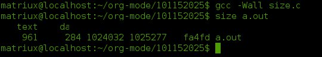
If you exam its size with ls -l, you should get
-rwxr-xr-x 1 matriux matriux 4770 Oct 18 18:05 a.out
Tell me something about the outputs
- What does the 4770 mean?
The total size of what gets loaded into memory is only 4770 bytes, in a file that is 102,5277 bytes long
- What do the 961, 284, 1024032, and 1025277 mean?
see this table
program memory address space segment excutable file section Code Text Text Initialized data data data bss data bss heap data stack stack 961 in program memory is Code 284 in program memory is Initialized data 1024032 in program memory is bss 1025277 is the total size of Code + Initialized data + bss(961+284+1024032)
1.2.2 Shared Memory Segments
- Your tasks
-
- Follow Beej's Guide to Unix IPC, section 9 step by step to learn how to use shared memory segments.
- Use ipcrm to remove the segment you just created while running the example code.
- before the ipcrm
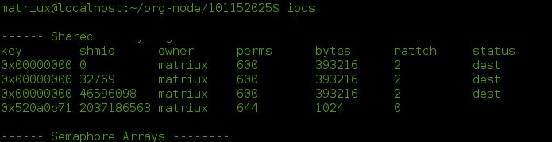
- after the ipcrm
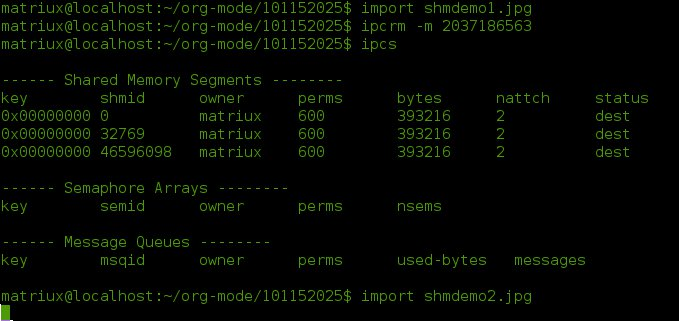
- before the ipcrm
- Add semaphore mechanism into the sample program (shmdemo.c) to enforce mutual-exclusive access to the shared data area.
/* ** shmdemo.c -- read and write to a shared memory segment */ #include <stdio.h> #include <stdlib.h> #include <string.h> #include <sys/types.h> #include <sys/ipc.h> #include <sys/shm.h> #include <errno.h> #include <sys/sem.h> #define SHM_SIZE 1024 /* make it a 1K shared memory segment */ /* **-- demonstrates semaphore use as a file locking mechanism */ #define MAX_RETRIES 10 union semun { int val; struct semid_ds *buf; ushort *array; }; /* ** initsem() -- more-than-inspired by W. Richard Stevens' UNIX Network ** Programming 2nd edition, volume 2, lockvsem.c, page 295. */ int initsem(key_t key, int nsems) /* key from ftok() */ { int i; union semun arg; struct semid_ds buf; struct sembuf sb; int semid; semid = semget(key, nsems, IPC_CREAT | IPC_EXCL | 0666); if (semid >= 0) { /* we got it first */ sb.sem_op = 1; sb.sem_flg = 0; arg.val = 1; printf("press return\n"); getchar(); for(sb.sem_num = 0; sb.sem_num < nsems; sb.sem_num++) { /* do a semop() to "free" the semaphores. */ /* this sets the sem_otime field, as needed below. */ if (semop(semid, &sb, 1) == -1) { int e = errno; semctl(semid, 0, IPC_RMID); /* clean up */ errno = e; return -1; /* error, check errno */ } } } else if (errno == EEXIST) { /* someone else got it first */ int ready = 0; semid = semget(key, nsems, 0); /* get the id */ if (semid < 0) return semid; /* error, check errno */ /* wait for other process to initialize the semaphore: */ arg.buf = &buf; for(i = 0; i < MAX_RETRIES && !ready; i++) { semctl(semid, nsems-1, IPC_STAT, arg); if (arg.buf->sem_otime != 0) { ready = 1; } else { sleep(1); } } if (!ready) { errno = ETIME; return -1; } } else { return semid; /* error, check errno */ } return semid; } int main(int argc, char *argv[]) { key_t key; int shmid; char *data; int mode; /***************** This is a semphore ****************/ int semid; struct sembuf sb; sb.sem_num = 0; sb.sem_op = -1; /* set to allocate resource */ sb.sem_flg = SEM_UNDO; if ((key = ftok("semdemo.c", 'J')) == -1) { perror("ftok"); exit(1); } /* grab the semaphore set created by seminit.c: */ if ((semid = initsem(key, 1)) == -1) { perror("initsem"); exit(1); } printf("Press return to lock: "); getchar(); printf("Trying to lock...\n"); if (semop(semid, &sb, 1) == -1) { perror("semop"); exit(1); } printf("Locked.\n"); printf("Press return to unlock: "); getchar(); sb.sem_op = 1; /* free resource */ if (semop(semid, &sb, 1) == -1) { perror("semop"); exit(1); } printf("Unlocked\n"); /****************** This is shm **************/ if (argc > 2) { fprintf(stderr, "usage: shmdemo [data_to_write]\n"); exit(1); } /* make the key: */ if ((key = ftok("shmdemo.c", 'R')) == -1) { perror("ftok"); exit(1); } /* connect to (and possibly create) the segment: */ if ((shmid = shmget(key, SHM_SIZE, 0644 | IPC_CREAT)) == -1) { perror("shmget"); exit(1); } /* attach to the segment to get a pointer to it: */ data = shmat(shmid, (void *)0, 0); if (data == (char *)(-1)) { perror("shmat"); exit(1); } /* read or modify the segment, based on the command line: */ if (argc == 2) { printf("writing to segment: \"%s\"\n", argv[1]); strncpy(data, argv[1], SHM_SIZE); } else printf("segment contains: \"%s\"\n", data); /* detach from the segment: */ if (shmdt(data) == -1) { perror("shmdt"); exit(1); } return 0; }
There are some pictures of shm_semphore:
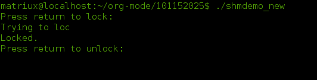 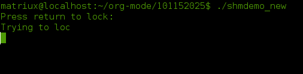 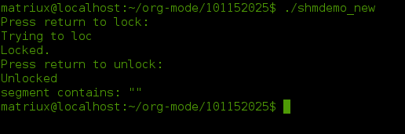 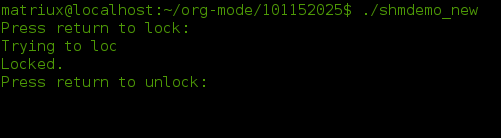
1.2.3 Memory Mapped Files
- Follow Beej's Guide to Unix IPC, section 10 step by step to learn how to use memory mapped files. 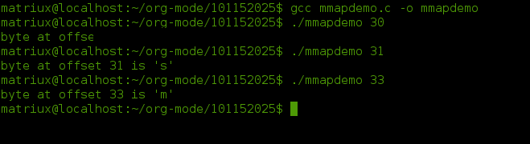
- Write a small program to find out the page size of your Linux PC.
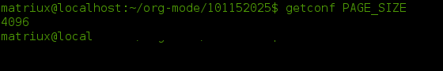
or this way
#include <stdio.h> int main(void) { int size = getpagesize(); printf("pagesize is %d Bytes", size); }
- Add semaphore mechanism into the sample program (mmapdemo.c) to enforce mutual-exclusive access to the shared data area.
/* ** mmapdemo.c -- demonstrates memory mapped files lamely. */ #include <stdio.h> #include <stdlib.h> #include <fcntl.h> #include <unistd.h> #include <sys/types.h> #include <sys/mman.h> #include <sys/stat.h> #include <errno.h> #include <errno.h> #include <sys/types.h> #include <sys/ipc.h> #include <sys/sem.h> /**************** This is a semphore ***************/ /* **-- demonstrates semaphore use as a file locking mechanism */ #define MAX_RETRIES 10 union semun { int val; struct semid_ds *buf; ushort *array; }; /* ** initsem() -- more-than-inspired by W. Richard Stevens' UNIX Network ** Programming 2nd edition, volume 2, lockvsem.c, page 295. */ int initsem(key_t key, int nsems) /* key from ftok() */ { int i; union semun arg; struct semid_ds buf; struct sembuf sb; int semid; semid = semget(key, nsems, IPC_CREAT | IPC_EXCL | 0666); if (semid >= 0) { /* we got it first */ sb.sem_op = 1; sb.sem_flg = 0; arg.val = 1; printf("press return\n"); getchar(); for(sb.sem_num = 0; sb.sem_num < nsems; sb.sem_num++) { /* do a semop() to "free" the semaphores. */ /* this sets the sem_otime field, as needed below. */ if (semop(semid, &sb, 1) == -1) { int e = errno; semctl(semid, 0, IPC_RMID); /* clean up */ errno = e; return -1; /* error, check errno */ } } } else if (errno == EEXIST) { /* someone else got it first */ int ready = 0; semid = semget(key, nsems, 0); /* get the id */ if (semid < 0) return semid; /* error, check errno */ /* wait for other process to initialize the semaphore: */ arg.buf = &buf; for(i = 0; i < MAX_RETRIES && !ready; i++) { semctl(semid, nsems-1, IPC_STAT, arg); if (arg.buf->sem_otime != 0) { ready = 1; } else { sleep(1); } } if (!ready) { errno = ETIME; return -1; } } else { return semid; /* error, check errno */ } return semid; } int main(int argc, char *argv[]) { key_t key; int semid; struct sembuf sb; sb.sem_num = 0; sb.sem_op = -1; /* set to allocate resource */ sb.sem_flg = SEM_UNDO; if ((key = ftok("semdemo.c", 'J')) == -1) { perror("ftok"); exit(1); } /* grab the semaphore set created by seminit.c: */ if ((semid = initsem(key, 1)) == -1) { perror("initsem"); exit(1); } printf("Press return to lock: "); getchar(); printf("Trying to lock...\n"); if (semop(semid, &sb, 1) == -1) { perror("semop"); exit(1); } printf("Locked.\n"); printf("Press return to unlock: "); getchar(); sb.sem_op = 1; /* free resource */ if (semop(semid, &sb, 1) == -1) { perror("semop"); exit(1); } printf("Unlocked\n"); /********************** This is mmap ******************/ int fd, offset; char *data; struct stat sbuf; if (argc != 2) { fprintf(stderr, "usage: mmapdemo offset\n"); exit(1); } if ((fd = open("mmapdemo.c", O_RDONLY)) == -1) { perror("open"); exit(1); } if (stat("mmapdemo.c", &sbuf) == -1) { perror("stat"); exit(1); } offset = atoi(argv[1]); if (offset < 0 || offset > sbuf.st_size-1) { fprintf(stderr, "mmapdemo: offset must be in the range 0-%d\n", sbuf.st_size-1); exit(1); } if ((data = mmap((caddr_t)0, sbuf.st_size, PROT_READ, MAP_SHARED, fd, 0)) == (caddr_t)(-1)) { perror("mmap"); exit(1); } printf("byte at offset %d is '%c'\n", offset, data[offset]); return 0; /***************** end of mmap ***************************/ }
There are some picture of mmapdemo_new:
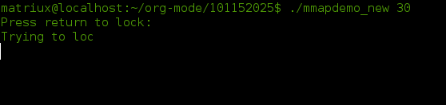 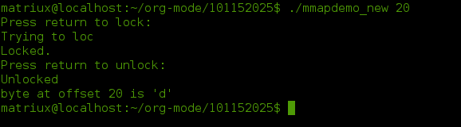 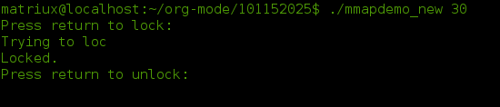
1.3 gains
This part is the end of the IPC, and also a comprehensive exercise, i had made a systematic study on IPC, and i find it's fun to exploit and use in different situation; ultimatelly i had finished it, i deem the most significant thing i had learned is how to solve the problem by myself and how to do some google, which is the best teacher bymyside, with full of interests and the best teacher nobody can stop my steps!
脚注:
1 DEFINITION NOT FOUND: 1